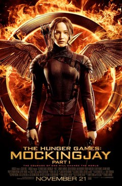
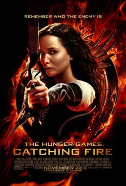

Jogos Vorazes
A saga *Jogos Vorazes*, escrita por Suzanne Collins, é uma série de romances distópicos que se passa em um futuro sombrio na nação de Panem, uma sociedade dividida em 13 distritos e a capital opulenta, chamada Capitol. A trama gira em torno de Katniss Everdeen, uma jovem de 16 anos do Distrito 12, o mais empobrecido.
A série é composta por três livros: *Jogos Vorazes* (2008), *Catching Fire* (2009) e *Mockingjay* (2010). A história começa com Katniss se oferecendo como tributo no lugar de sua irmã mais nova, Prim, para participar dos Jogos Vorazes, um evento anual televisivo em que um garoto e uma garota de cada distrito são forçados a lutar até a morte em uma arena.
1. *Jogos Vorazes*:** Katniss se torna uma das tributos e enfrenta não apenas os desafios brutais da arena, mas também a manipulação da mídia e a complexidade dos outros tributos. Seu comportamento destemido e suas habilidades de sobrevivência fazem dela uma figura de destaque, e ela começa a se tornar um símbolo de resistência.
2. *Em Chamas (Catching Fire)*:** Após vencer os Jogos Vorazes, Katniss retorna ao Distrito 12, mas logo descobre que sua vitória provocou uma rebelião contra o Capitol. No 75º Jogos Vorazes, os "Quarter Quell", antigos vencedores são forçados a competir novamente. Katniss e seu parceiro Peeta devem lutar para sobreviver mais uma vez enquanto lidam com a crescente tensão e conspirações ao seu redor.
3. *A Esperança (Mockingjay)*:** A guerra entre o Capitol e os distritos atinge seu clímax. Katniss se torna o "Tordo", um símbolo da revolução. Ela enfrenta dilemas morais, traições e a dura realidade da guerra enquanto busca derrubar o Capitol e trazer liberdade para Panem.
A saga explora temas como desigualdade social, opressão, mídia e resistência, combinando ação emocionante com uma profunda reflexão sobre o poder e a moralidade.
A série de filmes Jogos Vorazes é estrelada por um elenco principal que traz vida aos personagens da saga. Aqui estão os principais atores e os personagens que interpretam:
- Jennifer Lawrence como Katniss Everdeen: A protagonista da série, uma jovem corajosa que se torna o símbolo da resistência contra o Capitol.
- Josh Hutcherson como Peeta Mellark: O parceiro de Katniss nos Jogos Vorazes e seu interesse romântico. Ele é conhecido por sua gentileza e habilidades de sobrevivência.
- Liam Hemsworth como Gale Hawthorne: O melhor amigo de Katniss e seu interesse romântico antes dos Jogos. Gale é um personagem importante na luta contra a opressão.
- Woody Harrelson como Haymitch Abernathy: O mentor de Katniss e Peeta, um ex-vencedor dos Jogos Vorazes que se tornou um alcoólatra. Ele desempenha um papel crucial na preparação dos tributos para a competição.
- Elizabeth Banks como Effie Trinket: A excêntrica e colorida acompanhante dos tributos do Distrito 12, responsável por preparar Katniss e Peeta para os Jogos.
- Stanley Tucci como Caesar Flickerman: O carismático apresentador dos Jogos Vorazes, conhecido por sua personalidade extravagante e habilidades de entretenimento.
- Donald Sutherland como Presidente Snow: O tirânico líder do Capitol, que mantém seu domínio sobre os distritos por meio de opressão e violência.
- Julianne Moore como President Alma Coin: A líder do Distrito 13 e uma figura chave na revolução contra o Capitol, introduzida no último filme, A Esperança - Parte 1 e A Esperança - Parte 2.
| Filme |
Ano de Lançamento |
Duração |
Saiba Mais |
| Jogos Vorazes (The Hunger Games) |
Lançado em 2012 |
142 minutos |
Saiba Mais |
| Em Chamas (Catching Fire) |
Lançado em 2013 |
146 minutos |
Saiba Mais |
| A Esperança – Parte 1 (Mockingjay – Part 1) |
Lançado em 2014 |
123 minutos |
Saiba Mais |
| A Esperança – Parte 2 (Mockingjay – Part 2) |
Lançado em 2015 |
137 minutos |
Saiba Mais |

Em um futuro distópico, a jovem Katniss Everdeen (Jennifer Lawrence) se voluntaria para participar dos Jogos Vorazes, uma competição brutal transmitida ao vivo pela Capital para controlar os distritos subjugados. Junto com seu parceiro de distrito, Peeta Mellark (Josh Hutcherson), Katniss enfrenta desafios mortais e forma alianças enquanto tenta sobreviver e proteger sua família.
Voltar ao inicio

Após ganhar os Jogos Vorazes, Katniss e Peeta retornam ao Distrito 12 como vencedores. No entanto, sua vitória inspira uma rebelião crescente contra a tirania da Capital. Para reprimir a revolta, a Capital organiza o Massacre Quartenal, um evento especial em que ex-vencedores dos Jogos são forçados a competir novamente. Katniss e Peeta enfrentam novos perigos enquanto a revolução começa a se intensificar.
Voltar ao inicio